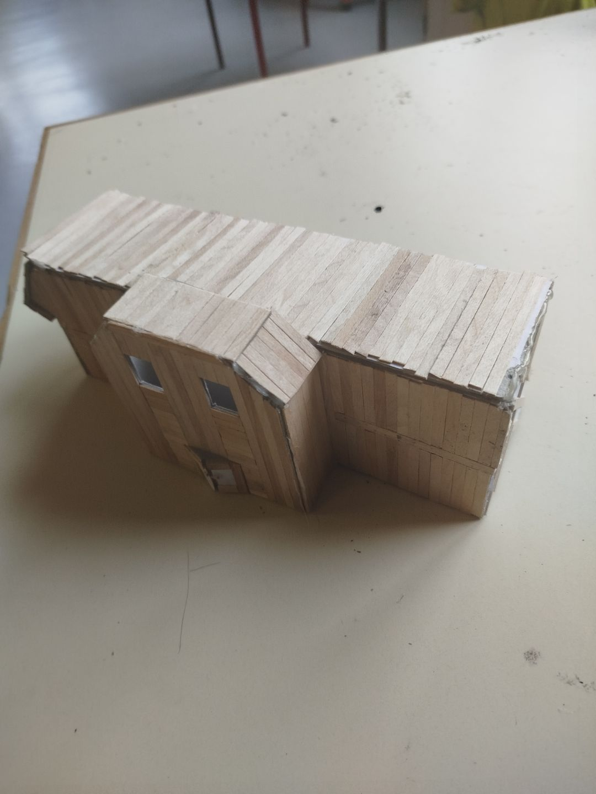
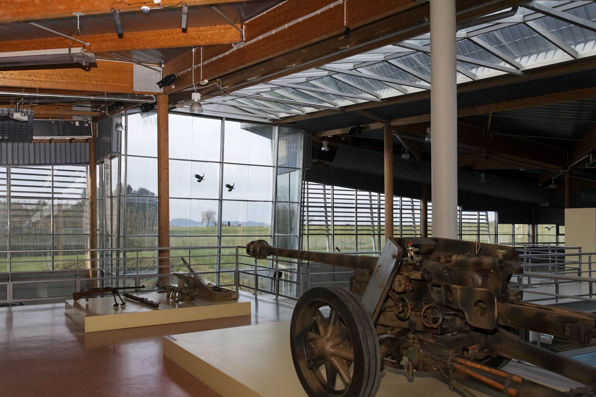

La maquette du musée de guerre représente un lieu suspendu au-dessus d’un bunker. À petite échelle, on y trouve des détails du bâtiment moderne et ecologique. À l’intérieur, des objets miniatures comme des armes et des uniformes racontent l’histoire de la guerre. Cette maquette permet de découvrir le musée de manière compacte, tout en transmettant l’importance de la mémoire et de la paix.

Le musée de guerre, situé au-dessus d'ancien bunker, est un lieu de mémoire. Il présente des objets du passé, comme des armes et des uniformes, pour montrer les horreurs de la guerre. À travers des expositions interactives, il invite les visiteurs à réfléchir à la paix et à l’importance de ne pas oublier les erreurs du passé. Ce musée, suspendu au-dessus des vestiges de la guerre, symbolise l’espoir d’un avenir sans conflit.